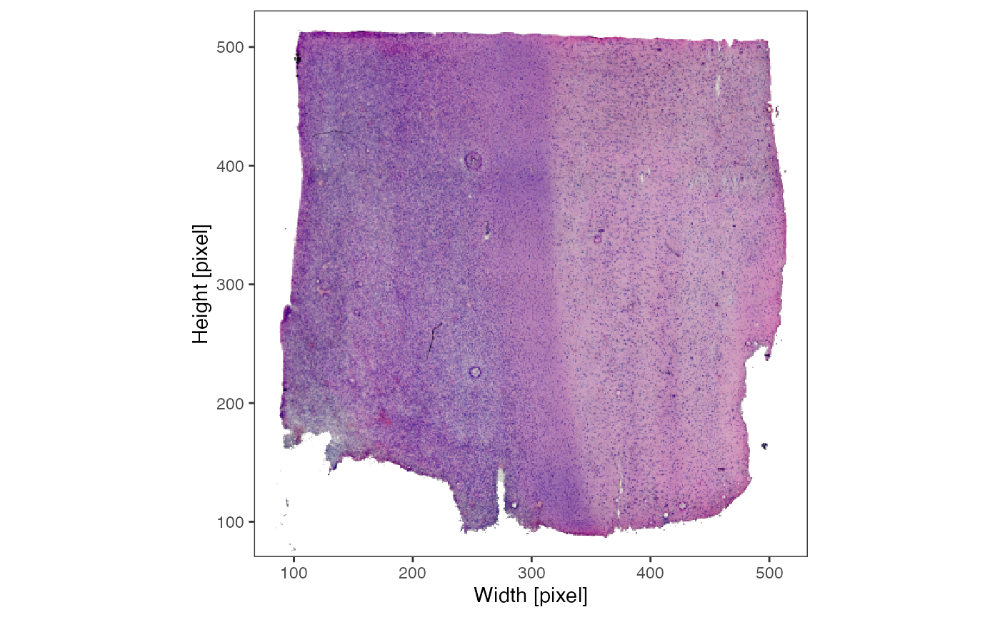
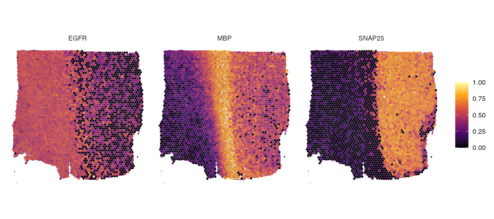
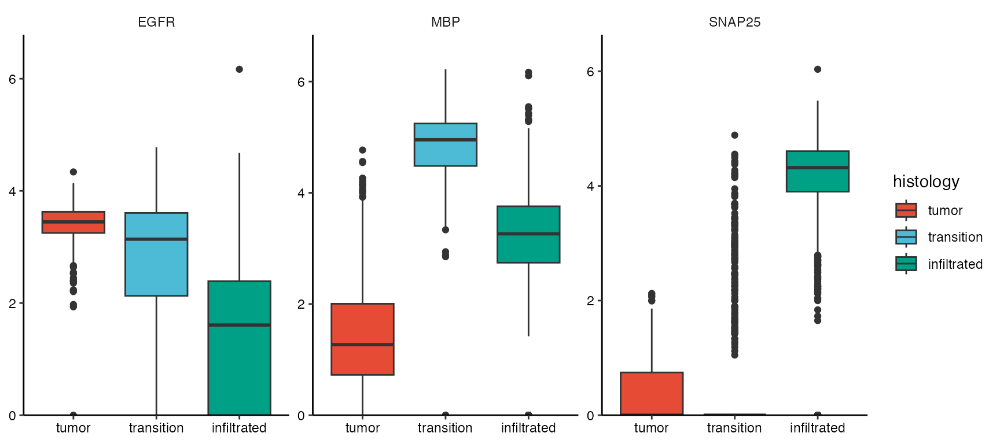

Spatial Segmentation
spatial-segmentation.Rmd1. Introduction
Spatial transcriptomic samples come along with an underlying histology image. To integrate the histological classification of the area a specific observations covers, the sample can be manually segmented with SPATA2. As an example we are using a spatial transcriptomic sample of a central nervous system malignancy that features three different, adjacent histological areas: Tumor, a transition zone as well as infiltrated cortex.
# load required packages
library(tidyverse)
library(SPATA2)
# load SPATA2 inbuilt data
object_t269 <- loadExampleObject("UKF269T", meta = TRUE, process = TRUE)2. Create spatial segmentation variables
Spatial segmentation, or sometimes referred to as manual annotation, means to create grouping variables that assign a label to each observation based on the histomorphological features of the image. In the example object of sample UKF269T, we provide such a variable. We just named it histology.
# variables that have been created using spatial segmentation
# curently only one: "histology"
getSpatSegmVarNames(object_t269)## [1] "histology"
# plot the histology image in coordinates frame
plotImage(object_t269) +
ggpLayerFrameByCoords(object_t269)
# grouping variable created with spatial segmentation
plotSurface(object_t269, color_by = "histology") 
To create a spatial segmentation variabl as displayed in the figure
above yourself, use the function
createSpatialSegmentation(). This animation exemplifies the
workflow:
object_t269 <- createSpatialSegmentation(object_t269)
To create a new segmentation variable click on ‘Create new segmentation variable’. You are then prompted to enter the name that you want to give the new variable. Here, we simply call it example_spat_segm. After clicking on ‘Add segmentation variable a new’ variable is created in the meta data.frame and all of it’s values are ‘unnamed’. This is the default, has we haven’t segmented anything yet. Working on segmentation variables means to consecutively label all observations depending on the histological area they cover. To achieve this, encircle the areas that you want to label on the Interaction-plot. Start drawing by double clicking on the plot or with the shortcut on your keyboard d. If you are drawing the plot tells you. By double-clicking again you leave the drawing mode. This can be used to zoom in or out to reorientate. If you double-click again the endpoint of the line drawn will connect to the position of your cursor and you can continue drawing. Encircle the area till start and endpoint of the line are close enough to be connected such that the circle closes. To close the circle click on ‘Highlight’. This highlights the observations that are encircled this way. After highlighting the observations the name that you want to label them with can be entered below the ‘Highlight’-button. Click on ‘Name’ to save the results. The results should be immediately displayed in the plot on the left. This can be done over and over again till you are satisfied. Note that the label you gave a observation is overwritten if you include it again in another area.
If you run the function with your own SPATA2 object for
the first time, there is no plot displayed on the left. This is because
there is currently no segmentation variable in the meta data.frame that
can be worked on. In this example, we have already created the spatial
segmentation variable histology. And do not bother to much with
single data points your drawn polygons omit. The function
dissolveGroups() might spare you time and trouble.
Furthermore, as the video below exemplifies, you can draw multiple outlines at the same time and give them one single label. On top of that, you can draw “holes” inside outlines. Note that outlines must not intersect!
object_t313 <- loadExampleObject("UKFT313", process = TRUE)
object_t313 <- createSpatialSegmentation(object_t313)
3. Data storage
Grouping variables in transcriptomic studies are often created by cluster algorithms and are stored in form of factors in the meta data.frame. As spatial segmentation variables are grouping variables, too, they are stored there as well.
# show all grouping (factor) variables in the meta data.frame
getMetaDf(object_t269) %>%
select(barcodes, where(is.factor))## # A tibble: 3,213 × 6
## barcodes tissue_section seurat_clusters histology bayes_space
## <chr> <fct> <fct> <fct> <fct>
## 1 GTAGCGCTGTTGTAGT-1 tissue_section_1 1 tumor 2
## 2 TTGTTTGTGTAAATTC-1 tissue_section_1 1 tumor 2
## 3 CGTAGCGCCGACGTTG-1 tissue_section_1 2 tumor 2
## 4 GTAGACAACCGATGAA-1 tissue_section_1 2 tumor 2
## 5 ACAGATTAGGTTAGTG-1 tissue_section_1 9 tumor 2
## 6 TGAGATCAAATACTCA-1 tissue_section_1 2 tumor 4
## 7 CTGGTCCTAACTTGGC-1 tissue_section_1 9 tumor 4
## 8 TGCACGAGTCGGCAGC-1 tissue_section_1 7 tumor 4
## 9 ATAGTCTTTGACGTGC-1 tissue_section_1 9 transition 4
## 10 GGGTGGTCCAGCCTGT-1 tissue_section_1 4 transition 4
## # ℹ 3,203 more rows
## # ℹ 1 more variable: example_spat_segm <fct>
# obtain only names from variables created with spatial segmentation
spat_segm_vars <- getSpatSegmVarNames(object_t269)
spat_segm_vars## [1] "histology" "example_spat_segm"
# show only variables that have been created by spatial segmentation
getMetaDf(object_t269) %>%
select(barcodes, all_of(spat_segm_vars))## # A tibble: 3,213 × 3
## barcodes histology example_spat_segm
## <chr> <fct> <fct>
## 1 GTAGCGCTGTTGTAGT-1 tumor unnamed
## 2 TTGTTTGTGTAAATTC-1 tumor unnamed
## 3 CGTAGCGCCGACGTTG-1 tumor unnamed
## 4 GTAGACAACCGATGAA-1 tumor unnamed
## 5 ACAGATTAGGTTAGTG-1 tumor unnamed
## 6 TGAGATCAAATACTCA-1 tumor unnamed
## 7 CTGGTCCTAACTTGGC-1 tumor unnamed
## 8 TGCACGAGTCGGCAGC-1 tumor unnamed
## 9 ATAGTCTTTGACGTGC-1 transition unnamed
## 10 GGGTGGTCCAGCCTGT-1 transition unnamed
## # ℹ 3,203 more rows
# visualize the (unfinished) spatial segmentation variable
# from the gif above
plotSurface(object_t269, color_by = "example_spat_segm", clrp_adjust = c("unnamed" = "lightgrey"))
4. Working with segmentation variables
Segmentation variables can be used like any other grouping variable
and are usually referred to via the arguments group_by,
grouping_variable or across.
# histology variable is a grouping option ...
getGroupingOptions(object_t269)## factor factor factor factor
## "tissue_section" "seurat_clusters" "histology" "bayes_space"
## factor
## "example_spat_segm"
# but not all grouping options derive from spatial segmentation
getSpatSegmVarNames(object_t269)## [1] "histology" "example_spat_segm"Since the new spatial segmentation variable is a meta feature as any
other grouping variables the same rules and options apply to it
getGroupNames(), renameGroups(),
relevelGroups().
# check group (segment) names
getGroupNames(object_t269, grouping = "histology")## [1] "tumor" "transition" "infiltrated"
# rename groups (only temporary without storing the results)
renameGroups(object_t269, grouping_variable = "histology", "tumor_renamed" = "tumor") %>%
plotSurface(object = ., color_by = "histology", pt_clrp = "npg")
Spatial segmentation variables can be also used to conduct DEA and GSEA based on histology and access results in plotting functions.
# run DEA based on histology
object_t269 <- runDEA(object = object_t269, across = "histology")
plotDeaVolcano(
object = object_t269,
across = "histology",
use_pseudolog = TRUE,
label_genes = c("EGFR", "MBP", "SNAP25")
)
plotSurfaceComparison(object_t269, color_by = c("EGFR", "MBP", "SNAP25"), nrow = 1)
plotBoxplot(object_t269, variables = c("EGFR", "MBP", "SNAP25"), across = "histology", nrow = 1, clrp = "npg")